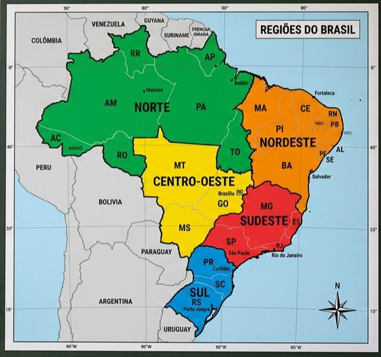

🗺️ Mapa Interativo de Solos
Clique em uma Região no mapa para descobrir o tipo de solo predominante:

Região Selecionada
Solo Predominante: -
-
📚 Biblioteca de Solos das Regiões
Conheça as características dos solos de cada canto do Brasil:
🚜 Simulador de Plantio Sustentável
Combine o solo, a cultura e o clima para ver o resultado da sua colheita!
🎯 Quiz do Especialista
A pergunta aparecerá aqui...
🏅 CERTIFICADO DE JUNIOR ESPECIALISTA 🏅
Certificamos que o aluno do 3º Ano concluiu os desafios do projeto Solo Brasil e aprendeu a cuidar da nossa terra com sustentabilidade!
Agrinho 2026 • Aprendizado Regional